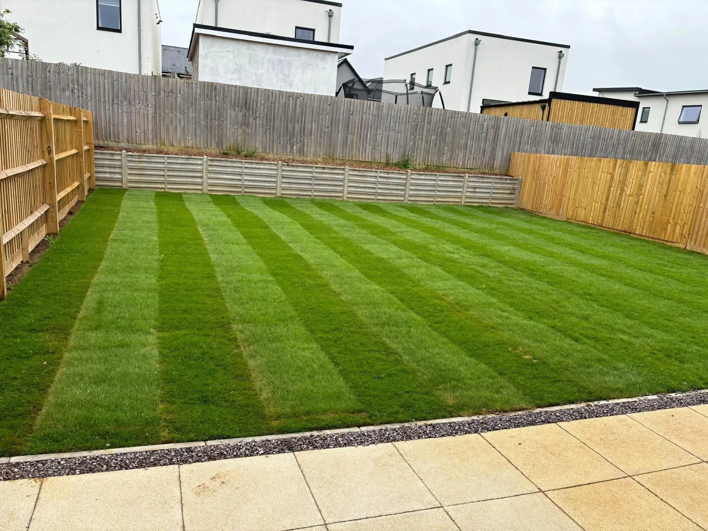
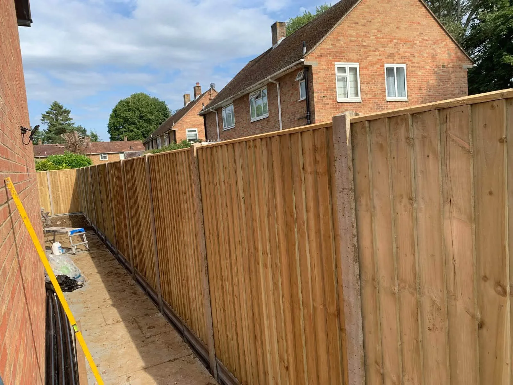
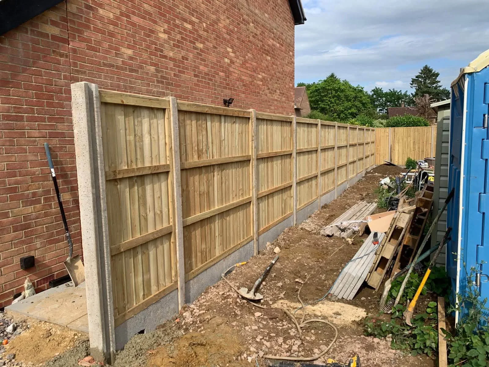
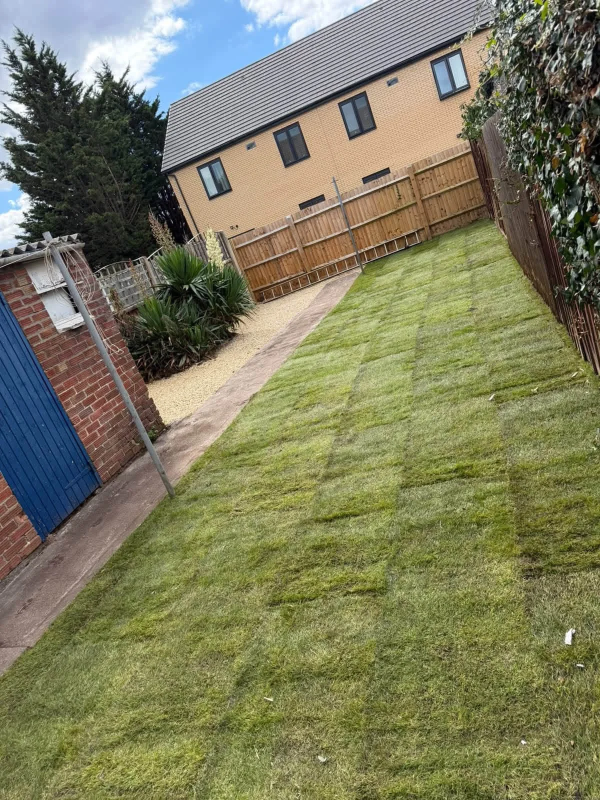

GROVE FENCING & LANDSCAPING · WANTAGE
Fencing with purpose.
Gardens to enjoy.
Domestic fencing, patios, decking and turfing in Wantage, Oxfordshire and surrounding areas. Free consultations and quotes.
Free, no-obligation quotesWantage & Oxfordshire
DOMESTIC GARDEN PROJECTS
A better boundary.
A greener garden.
From replacing a fence to laying a fresh lawn, Grove Fencing & Landscaping works with homeowners in Wantage, Oxfordshire and surrounding areas.
Tell us what you need from your garden. We can discuss the materials, layout and practical details, with a free consultation and quote.
Explore garden fencing →

TURFING & LANDSCAPING
Make room for
a fresh start.
A new lawn brings the planting, paving and boundaries together. Browse the turfing projects and talk to us about preparing and laying a lawn for your home.
Explore turfing & landscaping →
OUR PROJECTS
Work from the garden gate in.
A closer look at our fencing, lawn and garden projects.
GOOD TO KNOW
Before you get started.
Where do you work?
We are based in Wantage and take enquiries across Oxfordshire and surrounding areas. Send your postcode to check availability.
Which fencing styles can I enquire about?
Our service guide includes closeboard, panels, post-and-rail, hit-and-miss and knee-rail fencing, plus concrete spur repairs.
Can I send photos for a quote?
Yes. Use the WhatsApp form to prepare your enquiry, then add photos before sending. Include the area, approximate dimensions and any access restrictions.
Do you provide consultations and quotes?
Yes. Contact Grove for a free consultation and quote for your domestic project.
FREE, NO-OBLIGATION QUOTE
Let’s talk about your outdoor space.
Tell us what you have in mind. This form opens a WhatsApp draft with all your details, ready for you to review, add photos and send.